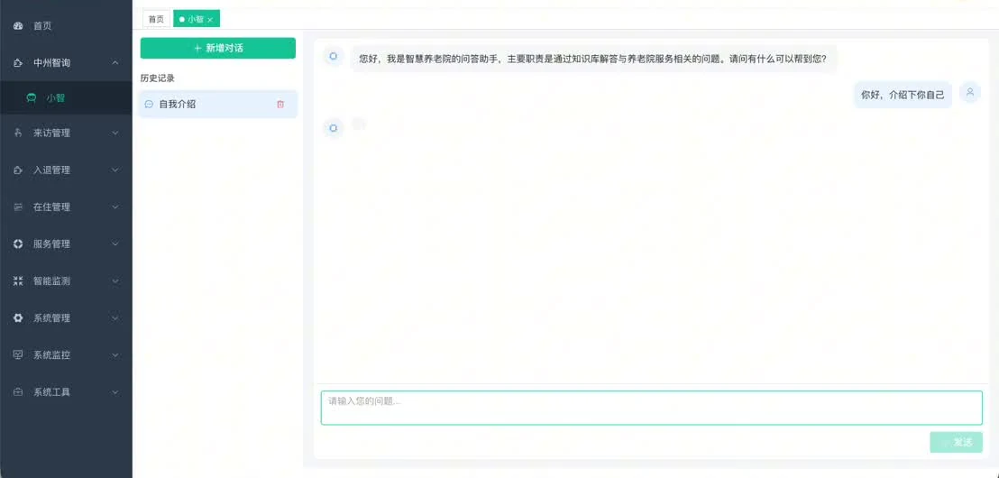

智游邯郸AI 智慧文旅 APP / 0 → 1 产品设计
面向邯郸游客的 AI 文旅产品。用数字人导游、个性化行程、AR 实景导航与打卡体系， 把“查攻略”变成一段连续的在地体验。
4 条
AI 能力链路
6 大
核心服务入口
5 套
高保真界面
把复杂的问题，
做成好用的产品。
4 个完整项目，2 段真实业务实践。每一个都从问题出发，而不是从功能出发。 点击卡片，查看我的判断、取舍与落地过程。
面向邯郸游客的 AI 文旅产品。用数字人导游、个性化行程、AR 实景导航与打卡体系， 把“查攻略”变成一段连续的在地体验。
把老人档案、床位、护理计划、健康档案与家属沟通收进一套系统， 再用 AI 问答把知识库和运营数据变成一线人员能用的工具。

WATCH THE DEMO · 2:32在弱信号、跨期漂移的信贷场景里，从 201 个特征中筛出 60 个， 用 LR / XGBoost / LightGBM 做对比评估，交付一份能支撑上线判断的建模报告。
从 6,965 条原始记录清洗到 6,945 家有效门店， 用地图、玫瑰图、水位图与柱状图，把“门店集中在哪里”讲成一个可交互的故事。
面对 DAU 与付费转化增长乏力，从漏斗里拆出“新手不会用、长对话丢失、回答不稳定”三个问题， 用 Prompt 评估体系、上下文策略和快捷指令模板把体验重新做了一遍。
把“各部门反复提数、权限混乱、数据不敢共享”的现状， 拆成申请、审批、可视化与脱敏四条链路，做成业务能自助使用的数据中台产品。
我不只写需求文档。我能走进用户现场，也能和研发讨论接口； 既对 AI 的能力边界保持清醒，也对结果负责。
理解大模型能力边界，能把 RAG、Prompt 评估、Agent 工作流翻译成产品方案，并主动处理幻觉、上下文丢失与调用成本。
证据：AI 对话助手 / 对话 CTR +14% ↗两段产品实习，一次从 0 到 1 的平台设计，一次从数据到体验的增长改版。 我都从问题定义开始，跟到结果复盘。